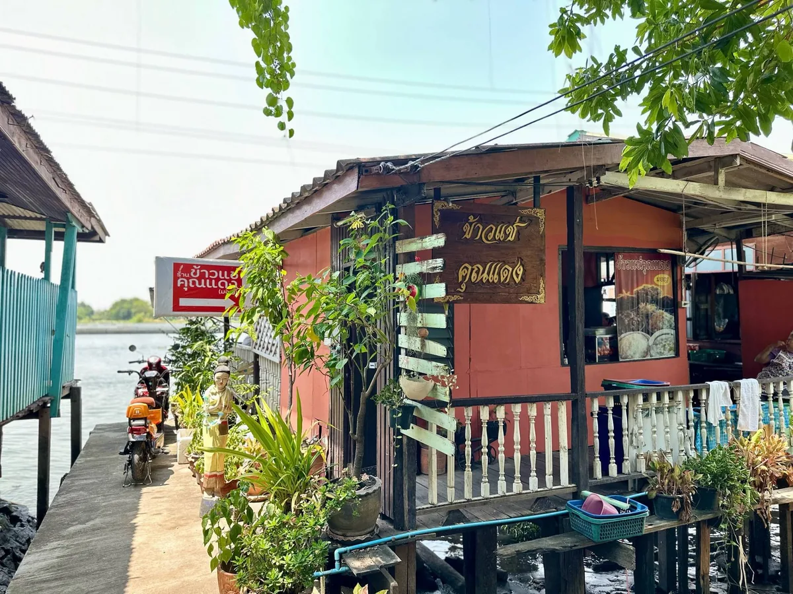
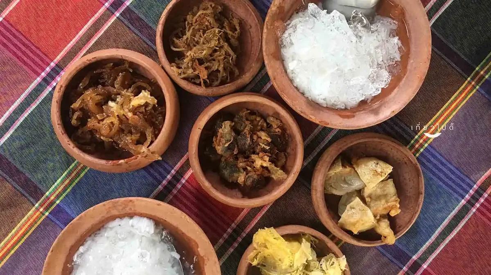
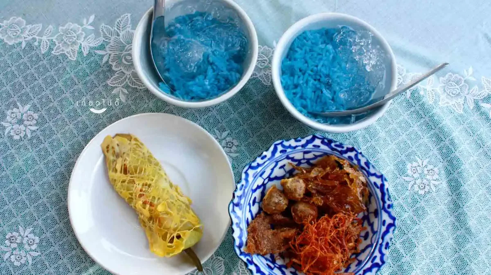
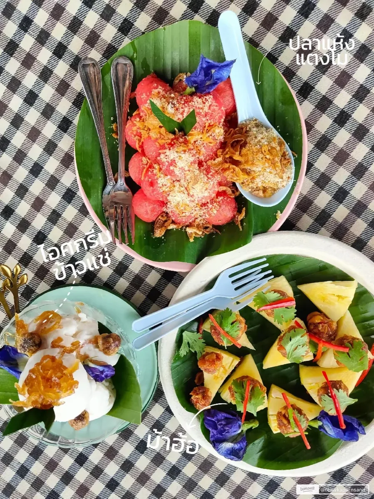
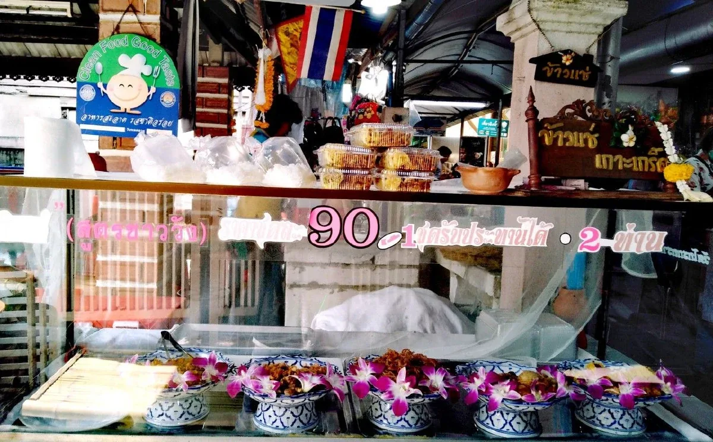
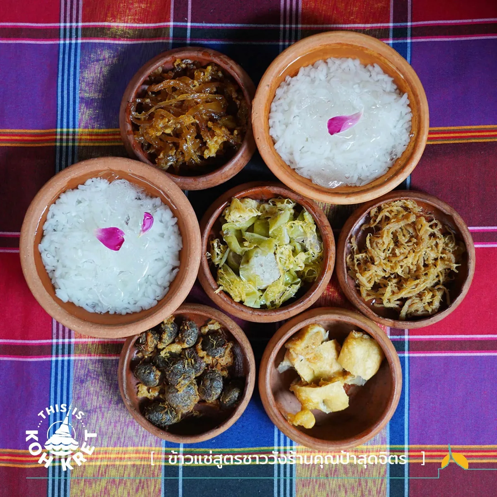
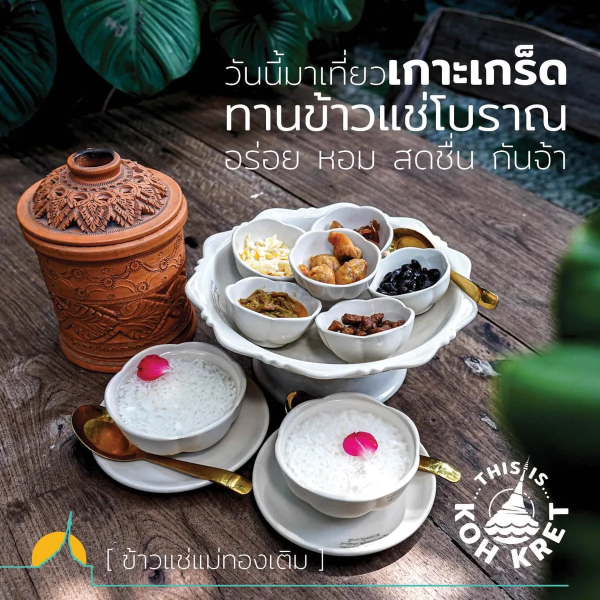
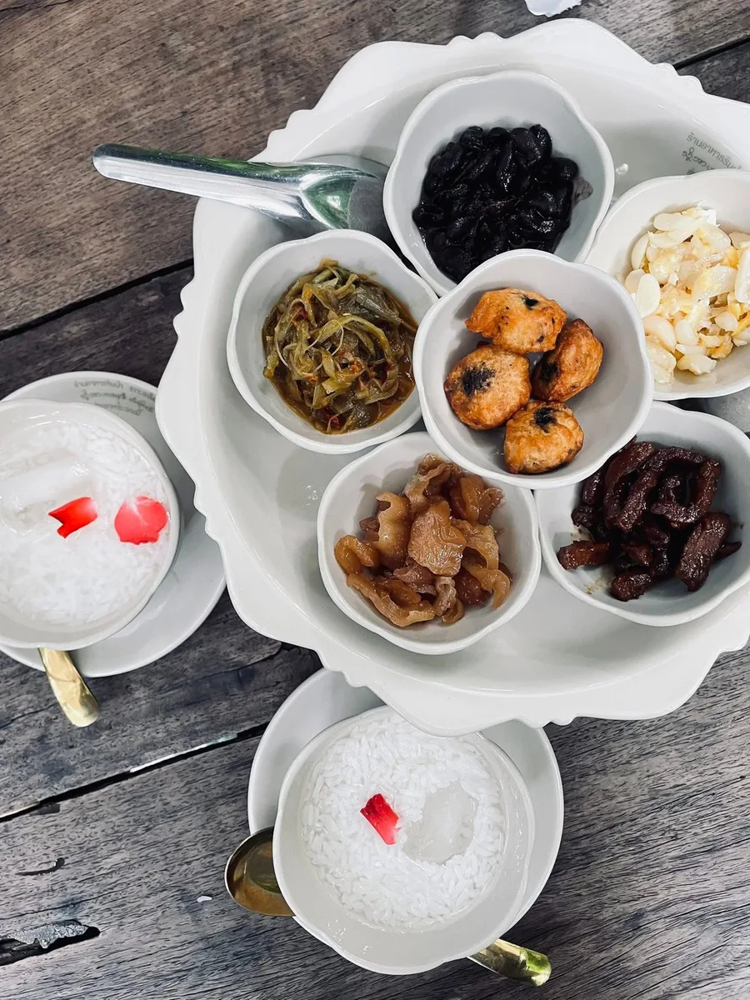

ของคาว
ข้าวแช่มอญ
ของกินตามฤดู ไม่ได้มีทั้งปี ถ้ามาหน้าร้อนแล้วเจอ ควรกิน เพราะรอบหน้าคืออีกปีหนึ่ง หน้านี้รวมร้านข้าวแช่บนเกาะไว้สี่ร้าน พร้อมราคา เวลาเปิด และช่วงที่ควรไปของแต่ละร้าน
สรุปให้ก่อน
- ราคา
- 60–250 บาทข้าวแช่ชุดละ 60–100 บาท ที่เกินนั้นคืออาหารจานอื่นที่สั่งเพิ่ม
- เวลาเปิด
- ส่วนใหญ่เสาร์–อาทิตย์และมีเฉพาะช่วงหน้าร้อน นอกฤดูส่วนใหญ่ไม่มีขาย
- พิกัด
- ต.เกาะเกร็ด อ.ปากเกร็ด นนทบุรีสามร้านอยู่หมู่ 7 อีกร้านอยู่หมู่ 1 ใกล้ท่าเรือ
- รวมในหน้านี้
- 4 ร้านมีทั้งสูตรมอญดั้งเดิมและสูตรชาววัง
ข้าวแช่เป็นอาหารที่คนไทยรู้จักในเวอร์ชันชาววัง แต่ต้นทางของมันมาจากมอญ และเกาะเกร็ดเป็นหนึ่งในไม่กี่ที่ที่ยังทำกินกันตามประเพณีเดิม
ในหนึ่งชุดมีอะไรบ้าง
- ข้าวสวยแช่ในน้ำเย็นที่อบควันเทียนและลอยดอกไม้
- ลูกกะปิทอด รสเค็มหวานที่เป็นตัวชูของทั้งชุด
- พริกหยวกสอดไส้ชุบไข่ทอด
- หัวไชโป๊วผัดหวาน และผักสดแกะสลักไว้กินแนม
กินยังไงให้ถูกวิธี
ไม่ต้องเอาเครื่องเคียงใส่ลงในข้าว ให้กินเครื่องเคียงคำหนึ่ง แล้วตามด้วยข้าวแช่คำหนึ่ง สลับกันไป น้ำข้าวแช่จะได้ยังหอมดอกไม้อยู่จนหมดชาม
สี่ร้านในหน้านี้
เลือกร้านยังไง
- อยากได้สูตรมอญแบบดั้งเดิมให้ไปคุณแดงหรือแม่ทองเติม ส่วนสูตรชาววังที่หอมน้ำลอยดอกไม้ชัดกว่าอยู่ที่ป้าสุดจิตร
- ลุงแดงเป็นร้านเดียวที่ใช้ข้าวสีฟ้าจากดอกอัญชัน ถ้ามาแล้วอยากได้รูปด้วย ร้านนี้ถ่ายขึ้นที่สุด
- สามร้านแรกอยู่หมู่ 7 เดินต่อกันได้ ส่วนแม่ทองเติมอยู่หมู่ 1 ใกล้ท่าเรือ เหมาะกับคนที่มีเวลาน้อย
- เกือบทุกร้านเปิดเฉพาะเสาร์–อาทิตย์ ถ้ามาวันธรรมดาควรโทรถามก่อนทุกกรณี
1. ข้าวแช่คุณแดง
ร้านข้าวแช่ชื่อดังของเกาะเกร็ด อยู่ในบ้านไม้ริมน้ำ มีระเบียงให้นั่งรับลมและมองแม่น้ำเจ้าพระยา จุดเด่นคือข้าวแช่สูตรมอญที่เสิร์ฟพร้อมเครื่องเคียงแบบดั้งเดิม ทั้งลูกกะปิทอด ไชโป๊วหวาน กระเทียมดองผัดไข่ หมูฝอย และพริกหยวกสอดไส้ นอกจากข้าวแช่ยังมีอาหารพื้นบ้านอย่างยำหน่อกะลาและผัดไทยให้สั่งเพิ่มด้วย
- ราคา
- 100–250 บาทเฉพาะข้าวแช่เริ่มราว 60–80 บาทต่อชุด
- เวลาเปิด
- เสาร์–อาทิตย์ 09:30–17:00ปิดจันทร์–ศุกร์
- พิกัด
- 37 หมู่ 7 ต.เกาะเกร็ด อ.ปากเกร็ด นนทบุรี 11120
- ควรไปตอนไหน
- สายถึงบ่าย 10:00–15:00ช่วงที่นั่งกินข้าวแช่เย็น ๆ ริมน้ำแล้วได้ลมด้วย


2. ข้าวแช่ลุงแดง
ร้านเก่าแก่ริมน้ำที่นักท่องเที่ยวบนเกาะรู้จักกันดี บรรยากาศเรียบง่ายแบบบ้าน ๆ จุดเด่นคือข้าวสีฟ้าจากดอกอัญชัน เสิร์ฟคู่กับเครื่องเคียงอย่างหมูฝอย ไชโป๊ว กะปิทอด และพริกหยวกยัดไส้
- ราคา
- 80–150 บาทข้าวแช่เริ่มราว 80 บาทต่อชุด
- เวลาเปิด
- ข้อมูลยังไม่ตรงกันบางแหล่งระบุ 08:00–17:00 บางแหล่งบอกว่าวันธรรมดาบางวันก็เปิด ควรถามร้านก่อนเดินทาง
- พิกัด
- 9 หมู่ 7 ต.เกาะเกร็ด อ.ปากเกร็ด นนทบุรี 11120
- ควรไปตอนไหน
- สายถึงบ่าย 10:00–15:00นั่งกินแล้วพักชมบรรยากาศริมน้ำต่อได้


3. ข้าวแช่สูตรชาววัง ป้าสุดจิตร
ร้านแบบบ้าน ๆ ที่เน้นข้าวแช่สูตรชาววังและบรรยากาศท้องถิ่นของเกาะเกร็ด ข้าวแช่ของร้านหอมกลิ่นน้ำลอยดอกไม้ชัด เสิร์ฟพร้อมเครื่องเคียงหลายอย่าง ทั้งพริกหยวกสอดไส้ ลูกกะปิทอด ปลาหวาน ไชโป๊วหวานผัดไข่ และหอมทอด
- ราคา
- 90–100 บาทต่อชุดรีวิวส่วนใหญ่บอกว่าหนึ่งชุดกินได้ราวสองคน
- เวลาเปิด
- เสาร์–อาทิตย์ 06:30–17:00บางแหล่งยังไม่ระบุเวลาอย่างเป็นทางการ ควรเช็กก่อนเดินทาง
- พิกัด
- 18 หมู่ 7 ต.เกาะเกร็ด อ.ปากเกร็ด นนทบุรี 11120
- ควรไปตอนไหน
- สายถึงบ่าย 10:00–15:00แวะกินแล้วได้บรรยากาศร้านแบบท้องถิ่นไปด้วย


4. ร้านข้าวแช่แม่ทองเติม
ร้านที่มีชื่อเรื่องข้าวแช่มอญโบราณ ซึ่งต่างจากสูตรชาววังทั่วไปตรงเครื่องเคียง ของร้านนี้มีลูกกะปิ หัวไชโป๊วผัด กระเทียมดองผัดไข่ หมูทอด ถั่วดำ และแกงคั่วผักบุ้ง มีมุมสวนเล็ก ๆ ให้นั่งกินด้วย
- ราคา
- ประมาณ 90 บาทต่อชุดถูกที่สุดในสี่ร้านที่รวมไว้
- เวลาเปิด
- เสาร์–อาทิตย์ 09:30–17:30ปิดจันทร์–ศุกร์
- พิกัด
- หมู่ 1 ต.เกาะเกร็ด อ.ปากเกร็ด นนทบุรี 11120เดินจากท่าเรือเข้ามาทางร้าน Chit Beer
- ควรไปตอนไหน
- สายถึงบ่าย 10:00–14:00มาลองสูตรมอญดั้งเดิมแล้วนั่งพักในมุมสวน


โทรถามร้านก่อนไป
ข้าวแช่ทำยากและทำวันต่อวัน หลายร้านทำจำนวนจำกัด ถ้าตั้งใจมากินอย่างเดียวควรถามก่อนว่าวันนั้นมีทำไหม